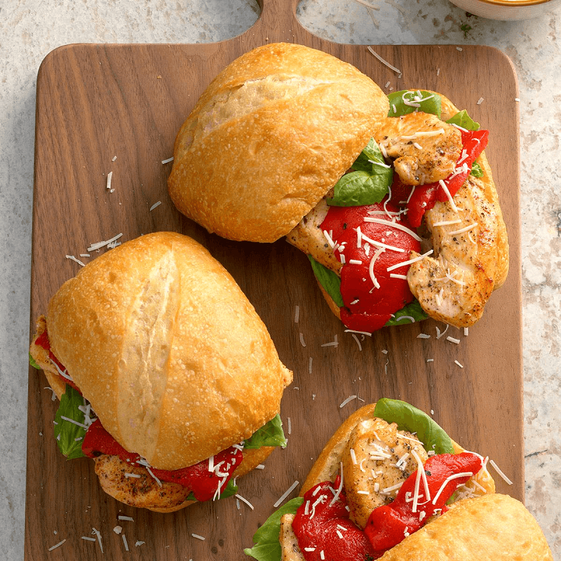

Enjoy Your Meal

Basil Chicken Sandwich
Ingredients:
- 1/2 teaspoon pepper
- 1/4 teaspoon salt
- Dash paprika
- 1 pound boneless skinless chicken breasts, cut into 1/2-inch slices
- 6 tablespoons prepared olive oil vinaigrette salad dressing, divided
- 6 ciabatta rolls
- 18 basil leaves
- 1 jar roasted sweet red peppers
- ¼ cup shredded romano cheese
Directions:
Step 1: In a bowl, combine the pepper, salt and paprika; sprinkle over chicken slices.
Step 2: In a nonstick skillet over medium-high heat, cook chicken in 2 tablespoons salad dressing for 4-5 minutes on each side or until chicken is no longer pink.
Step 3: Brush remaining salad dressing on rolls. Place basil leaves on rolls; top with chicken and red peppers. Sprinkle with Romano cheese.